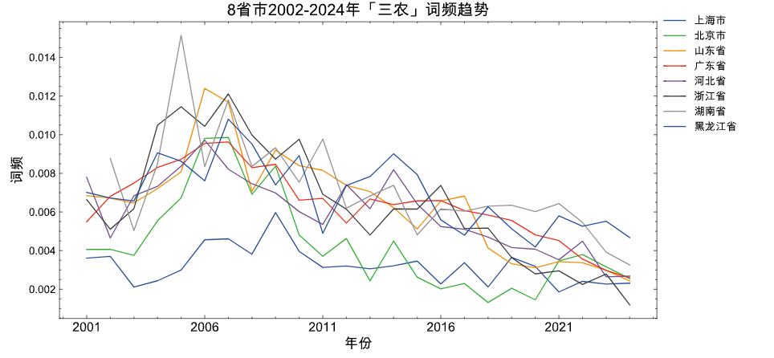
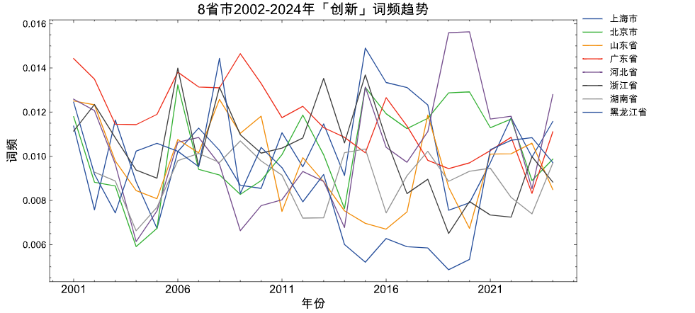
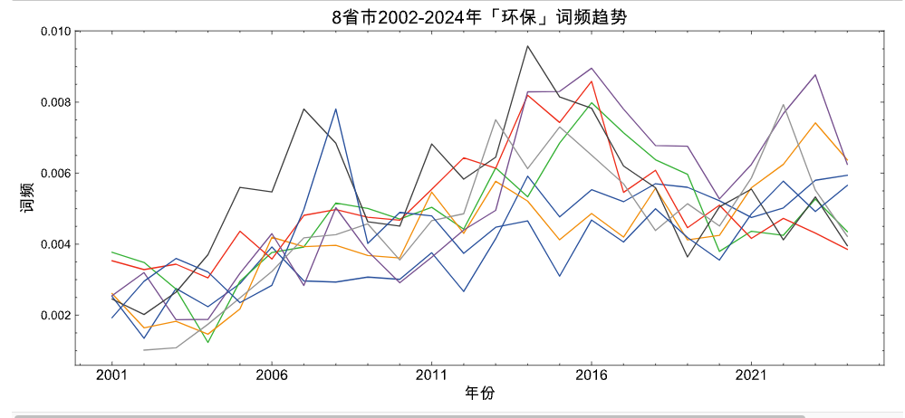
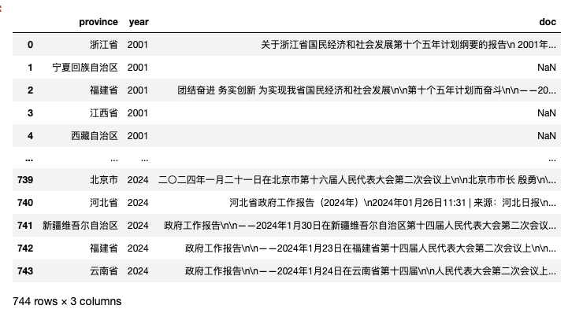
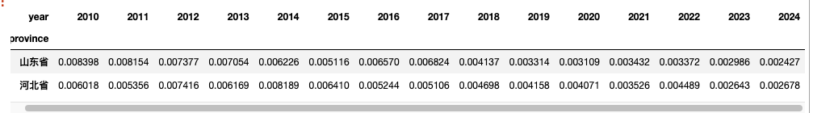
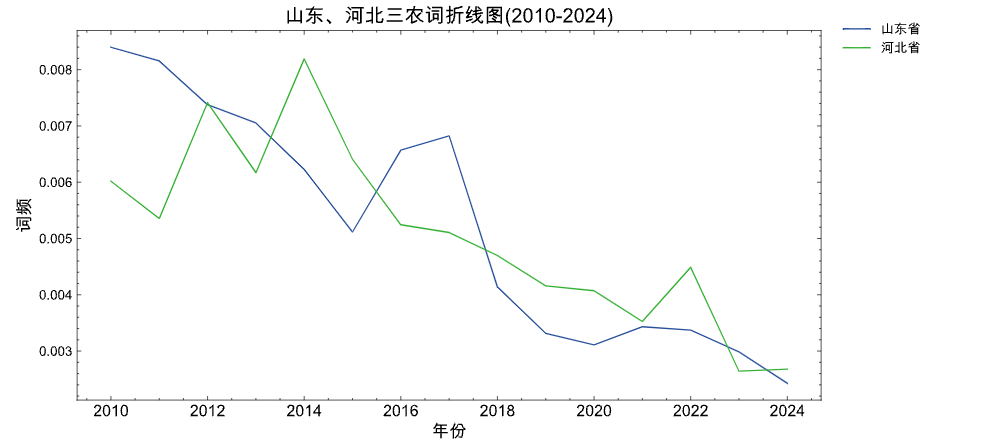
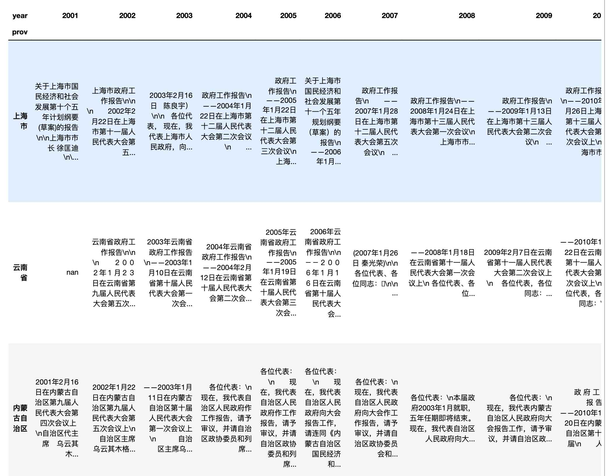
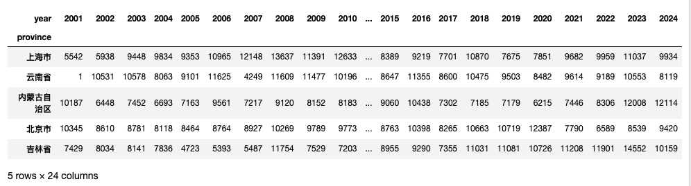
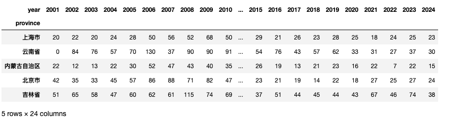

使用31省市的2002-2024年的省级政府工作报告，绘制出的不同类别关键词的趋势图。 直接上效果效果图



其实绘制三种图的数据是面板型数据，今天主要分享如何利用省级政府工作报告构建某类概念词频(创新、环保、三农)的面板数据，并绘制8省市概念词频折线图。 大家可以根据自己的研究需要更改代码， 生成自己概念的词频面板数据。
获取数据
数据集100元， 加微信 372335839， 备注「姓名-学校-专业」。
一、直接上代码
1.1 代码文件结构
项目文件夹
|---代码.ipynb
|---GovReportData #数据集 | 国、省、市三级政府工作报告文本
|---city.csv #市政府工作报告（2002-2024）
|---province.csv #省政府工作报告（2002-2024）
|---nation.csv #国务院政府工作报告（2002-2024）
1.2 读取数据
读取省报告数据文件 GovReportData/province.csv ，点击链接，获取政府工作报告数据集
import pandas as pd
pdf = pd.read_csv('GovReportData/province.csv')
pdf

1.2 生成面板数据函数
假设你使用的政府(省、市)工作报告数据是大邓提供的，可以直接使用下面封装的函数，快速生成概念词典，指定省份指定年度区间的面板数据。
def generate_prov_panel_data(csvf, concept_words, selected_provs=None, selected_years=None):
"""
csvf: csv的文件路径
concept_words: 概念词词语列表
selected_provs: 筛选指定省份的数据进行计算，列表
selected_years: 筛选指定年度的数据进行计算，数字列表
结果返回dataframe， 每一行代表一个省，每一列代表一年。
"""
import pandas as pd
import jieba
df = pd.read_csv(csvf)
df['doc'] = df['doc'].fillna('').str.lower()
df['year'] = df['year'].astype(str)
table_df = pd.pivot_table(df,
columns='year', #列-年份
index='province', #行-省份
values='doc', #单元格-文本
aggfunc=lambda cs: ''.join(str(c) for c in cs)) #让单元格填充文本
if selected_provs:
table_df = table_df[table_df.index.isin(selected_provs)]
if selected_years:
selected_years = [str(y) for y in selected_years]
table_df = table_df[selected_years]
word_count_df = table_df.apply(lambda row: row.apply(lambda t: len(jieba.lcut(str(t)))))
concept_word_count_df = table_df.apply(lambda row: row.str.count('|'.join(concept_words)))
concept_word_ratio_df = concept_word_count_df/word_count_df
return concept_word_ratio_df
concept_words = ['农村', '农业', '农民']
#所有省份，所有年度(2002-2024)
panel_data_df = generate_prov_panel_data(csvf='GovReportData/province.csv',
concept_words = concept_words)
print(panel_data_df.shape)
#如果需要保存
#panel_data_df.to_csv('省-三农-面板2001-2024.csv')
#panel_data_df.to_excel('省-三农-面板2001-2024.xlsx')
panel_data_df
Run
(31, 24)
生成 山东省河北省2010-2024期间政府工作报告提及三农词词频占比的面板数据
concept_words = ['农村', '农业', '农民']
selected_provs = ['山东省', '河北省']
selected_years = list(range(2010, 2025))
panel_data_df = generate_prov_panel_data(csvf='GovReportData/province.csv',
concept_words = concept_words,
selected_provs = selected_provs,
selected_years = selected_years)
#如果需要保存
#panel_data_df.to_csv('山东河北-三农-面板2010-2024.csv')
#panel_data_df.to_excel('山东河北-三农-面板2010-2024.xlsx')
panel_data_df

1.3 绘制折线图
def plot_line(panel_df, title):
import matplotlib.pyplot as plt
import matplotlib
import scienceplots
import platform
import pandas as pd
import matplotlib_inline
matplotlib_inline.backend_inline.set_matplotlib_formats('png', 'svg')
import jieba
import warnings
warnings.filterwarnings('ignore')
plt.style.use(['science', 'no-latex', 'cjk-sc-font'])
system = platform.system() # 获取操作系统类型
if system == 'Windows':
font = {'family': 'SimHei'}
elif system == 'Darwin':
font = {'family': 'Arial Unicode MS'}
else:
font = {'family': 'sans-serif'}
matplotlib.rc('font', **font) # 设置全局字体
panel_df_T = panel_df.T
ax = panel_df_T.plot(figsize=(10, 5))
# 添加图例，并指定位置和偏移
ax.legend(loc='upper right', bbox_to_anchor=(1.15, 1.05))
plt.title(title, size=15)
plt.xticks(size=12)
plt.xlabel('年份', size=13)
plt.ylabel('词频', size=13)
plt.show()
现在我们试试
concept_words = ['农村', '农业', '农民']
selected_provs = ['山东省', '河北省']
selected_years = list(range(2010, 2025)) #2010年-2024年
#生成面板数据
panel_data_df = generate_prov_panel_data(csvf='GovReportData/province.csv',
concept_words = concept_words,
selected_provs = selected_provs,
selected_years = selected_years)
#绘图
plot_line(panel_df=panel_data_df,
title='山东、河北三农词折线图(2010-2024)')

二、函数代码拆解
2.1 读取数据
36.6M的数据，含file和text两个字段， 点击获取政府公告文件
import pandas as pd
pdf = pd.read_csv('GovReportData/province.csv')
pdf
2.2 构建透视表
构建透视表，行索引名为省 prov，列名为时间year， 单元格内填充工作报告文本。
代码不用太深究，只要知道代码操作前后数据形态的变化即可。
import pandas as pd
table_df = pd.pivot_table(pdf,
columns='year', #列-年份
index='province', #行-省份
values='doc', #单元格-文本
aggfunc=lambda cs: ''.join(str(c) for c in cs)) #让单元格填充文本
print(table_df.shape)
table_df
Run
(31, 24)

table_df是一个31行， 24列的矩阵。 每行代表一个省，每一列代表一个年份。
2.3 统计总词数
统计所有报告的词语数。代码高度抽象， 咱们只看结果。 从 table_df 变为 word_count_df
import jieba
word_count_df = table_df.apply(lambda row: row.apply(lambda t: len(jieba.lcut(str(t)))))
word_count_df.head()
Run
(31, 24)

2.4 统计概念词频(占比)
统计所有报告中，某概念词词频，以三农为例
concept_words = ['农村', '农业', '农民']
concept_word_count_df = table_df.apply(lambda row: row.str.count('|'.join(concept_words)))
print(concept_word_count_df.shape)
#为方便，只展示前5行
concept_word_count_df.head()
Run
(31, 24)

将数据转化为词频占比，即 报告「三农词」出现次数/报告总词数
concept_word_ratio_df = concept_word_count_df/word_count_df
print(concept_word_ratio_df.shape)
concept_word_ratio_df.head()
Run
(31, 24)
到目前为止， 已经将一坨文本，转化为结构化的面板数据， 其实现在就可以保存起来啦。
2.5 保存结果
concept_word_ratio_df.to_csv('concept_word_ratio.csv')
三、可视化
3.1 稍作解释
可视化 plot_line 函数内部没有进行过多的数据变换， 仅仅只是进行了转置 和 日期格式变化。本小节只稍作解释，马上进入后续的三个可视化案例。
concept_word_ratio_df_T = concept_word_ratio_df.T
concept_word_ratio_df_T
3.2 「三农」折线图
selected_provs = ['河北省', '山东省', '北京市', '上海市', '广东省', '浙江省', '黑龙江省', '湖南省']
concept_words = ['农村', '农业', '农民']
tri_agri_panel_df = generate_prov_panel_data(csvf='GovReportData/province.csv',
concept_words =concept_words,
selected_provs = selected_provs)
plot_line(panel_df=tri_agri_panel_df,
title='8省市2002-2024年「三农」词频趋势')
从上图中，可以看出
- 05年提及三农词占比最多的是湖南，是20年以来8省市中占比值最高记录
- 大多数省份在07年达到峰值
- 07年前，工作报告中提及三农词提及三农词的占比趋势是上升的
- 07年后，工作报告中提及三农词提及三农词的占比趋势是下升的。
3.3 「创新」折线图
selected_provs = ['河北省', '山东省', '北京市', '上海市', '广东省', '浙江省', '黑龙江省', '湖南省']
concept_words = ['科学', '技术', '创新', '研发', '科技']
inovation_panel_df = generate_prov_panel_data(csvf='GovReportData/province.csv',
concept_words =concept_words,
selected_provs = selected_provs)
plot_line(panel_df=inovation_panel_df,
title='8省市2002-2024年「创新」词频趋势')
从上图中，可以看出
-
整体看，2000年以来八省市工作报告中提及科创相关词的比例是稳定的。
-
2010年之后， 黑龙江是八省市中提起科创概念词最少的省份。
-
河北省2020年支棱起来了，是提及科创概念词最高的，而且是八省市所有年份最高！
3.4 「环保」折线图
参考 陈诗一,陈登科.雾霾污染、政府治理与经济高质量发展[J].经济研究,2018,53(02):20-34.
本文选取省级政府工作报告中与环境相关词汇出现频数及其比重来度量 政府环境治理政策 （Chen et al．，2016）。 该指标不仅全面地度量了地方政府环境治理的力度 ， 而且由于地方政府工作报告一般发生在年初 ， 该年度的经济发展无法反向影响事先已经确定的政府工作报告 ， 从而可以减缓采用已有度量指标所产生的的内生性问题 。
selected_provs = ['河北省', '山东省', '北京市', '上海市', '广东省', '浙江省', '黑龙江省', '湖南省']
#词语来自 {陈诗一,陈登科.雾霾污染、政府治理与经济高质量发展[J].经济研究,2018,53(02):20-34.}
concept_words = ['环境保护', '环保', '污染', '能耗', '减排', '排污',
'生态', '绿色', '低碳', '空气', '化学需氧量',
'二氧化硫', '二氧化碳', 'pm10', 'pm2.5']
environment_panel_df = generate_prov_panel_data(csvf='GovReportData/province.csv',
concept_words =concept_words,
selected_provs = selected_provs)
plot_line(panel_df = environment_panel_df,
title='8省市2002-2024年「环保」词频趋势')
四、相关内容
4.1 相关代码
之前看到一篇论文研究人民网留言板问答中的政府回复行为， 控制变量使用的是政府数字化程度。
论文使用政府工作报告数字化词语提及次数， 用来测量政府的数字化程度。
但从今天的实验看，用数字化词频测量政府数字化程度，不怎么准， 要慎重使用。
4.3 相关文献
[1]陈诗一,陈登科.雾霾污染、政府治理与经济高质量发展[J].经济研究,2018,53(02):20-34.